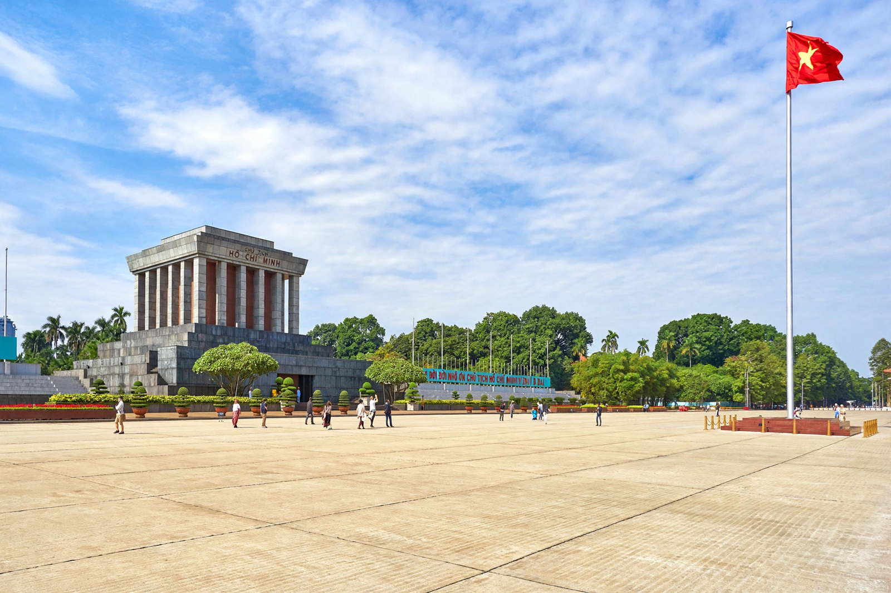

North Vietnam, officially the Democratic Republic of Vietnam (DRV), was a socialist state in Southeast Asia that existed from 1945 to 1976. Proclaimed by Ho Chi Minh in Hanoi on 2 September 1945, it defeated France at Dien Bien Phu in 1954 and was recognised at the Geneva Conference as the government of Vietnam north of the 17th parallel. Under the Workers' Party of Vietnam, it fought South Vietnam and the United States in the Vietnam War, and after victory in 1975 it merged with the South to form the Socialist Republic of Vietnam in 1976.

| Democratic Republic of Vietnam | |
|---|---|
| Capital | Hanoi |
| Established | 2 September 1945 (declaration of independence) |
| Dissolved | 2 July 1976 (reunification with South Vietnam) |
| President | Ho Chi Minh (1945–1969); Tôn Đức Thắng (1969–1976) |
| Ruling party | Workers' Party of Vietnam |
| Currency | Đồng |
The August Revolution of 1945 brought the Viet Minh to power in Hanoi, and Ho Chi Minh read Vietnam's declaration of independence in Ba Dinh Square, quoting the American declaration of 1776. France attempted to restore colonial rule, triggering the First Indochina War in December 1946. After eight years of guerrilla warfare, Viet Minh forces under Võ Nguyên Giáp won a decisive victory at Dien Bien Phu (May 1954). The Geneva Accords temporarily partitioned Vietnam at the 17th parallel pending elections that were never held.
In the North, the party carried out land reform (1953–56) in which thousands of landlords were executed, collectivised agriculture, and suppressed dissent in episodes such as the Nhân Văn–Giai Phẩm affair. About a million people, many of them Catholics, fled south in 1954–55. The state built heavy industry with Soviet and Chinese aid and developed an extensive air-defence and civil-defence system.
From the early 1960s the DRV directed and supplied the insurgency in the South through the National Liberation Front (Viet Cong), moving men and materiel down the Ho Chi Minh trail through Laos. The United States bombed the North intensively (Operations Rolling Thunder and Linebacker) and mined Haiphong harbour, but Hanoi withstood the pressure. The 1973 Paris Peace Accords ended direct US involvement; a final conventional offensive captured Saigon on 30 April 1975.
North and South were formally unified on 2 July 1976 as the Socialist Republic of Vietnam, with Hanoi as capital. The DRV's party, renamed the Communist Party of Vietnam, remained in power.
The DRV was a one-party Marxist-Leninist state. Real power lay with the Politburo of the Workers' Party, led after 1960 by First Secretary Lê Duẩn. Daily life during the war years centred on rationing, mass mobilisation, and evacuation of cities under bombing; Hanoi's population famously endured through extensive shelter networks.